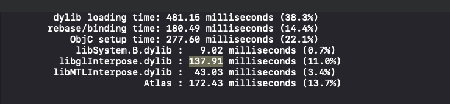

App的启动总时间可以分为两个大部分，以main函数为分割线。
总时间T = t1（main之前） + t2（main之后）
主要的执行步骤
- 执行exe()
- 加载可执行文件
- 加载dyld
- dyld加载其他动态链接库
- Rebase
- Bind
- Objc
- Initializers
动态链接和静态编译的区别
*动态链接会减少可执行文件的大小，编译的时候不需要打包进去，只有执行的时候才进行链接
dyld将.o文件和动态链接库和静态库
观察main函数之前加载的时间
在 Xcode 中 Edit scheme -> Run -> Auguments 将环境变量DYLD_PRINT_STATISTICS 设为 1，然后观察控制台

- 加载 Dylib
- 减少不需要的动态库
- 合并非系统库
- rebase/binding
- 对于 ObjC 来说就是减少class,selector 和 category
- 为了不破坏代码易读性，我们只能减少不必要的类、代码
- ObjC setup
- 无
- Initializers
- 减少+load方法调用
怎样优化main后面的加载时间
- 减少framework
- 慎用+load，
- 微信之类的注册使用子线程
- 使用Time Profiler 来看方法的执行时间